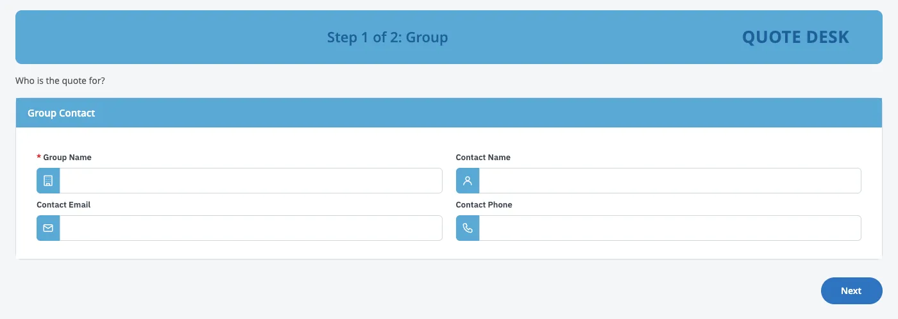
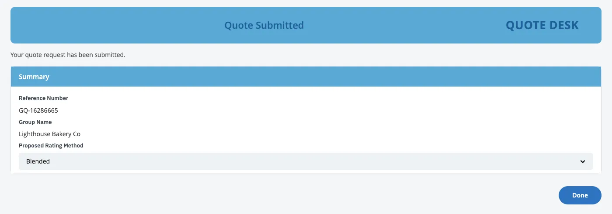
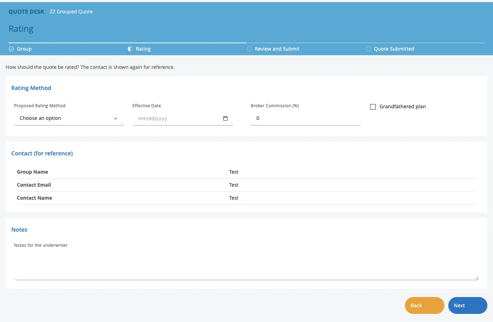
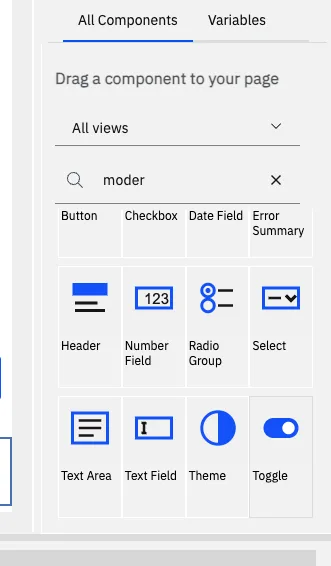
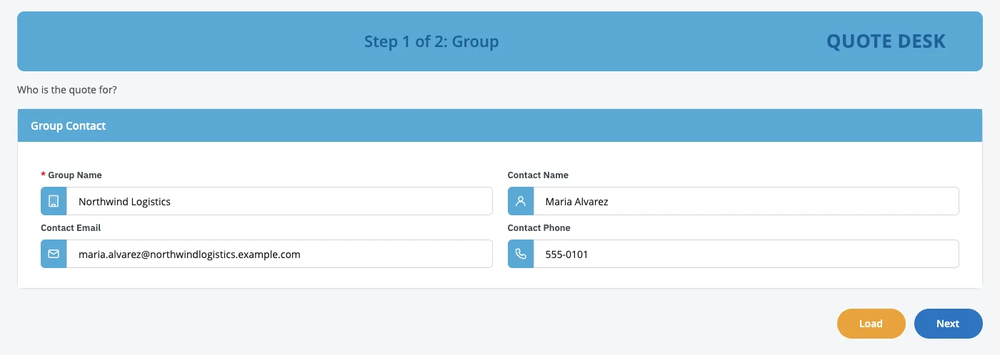
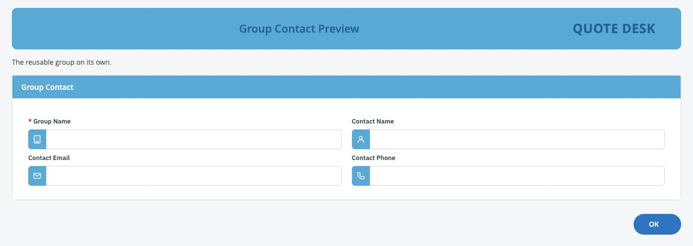
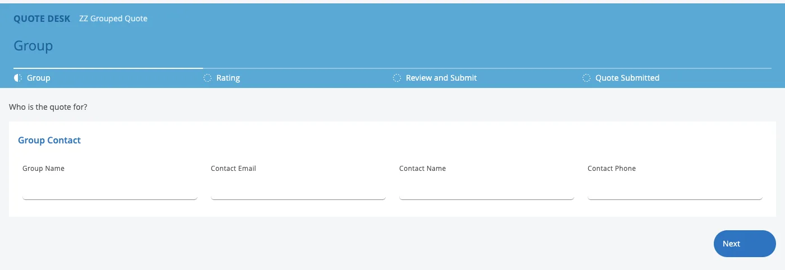
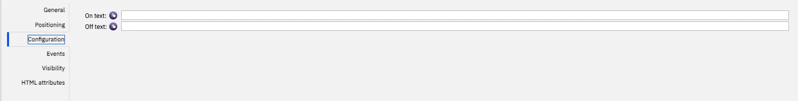
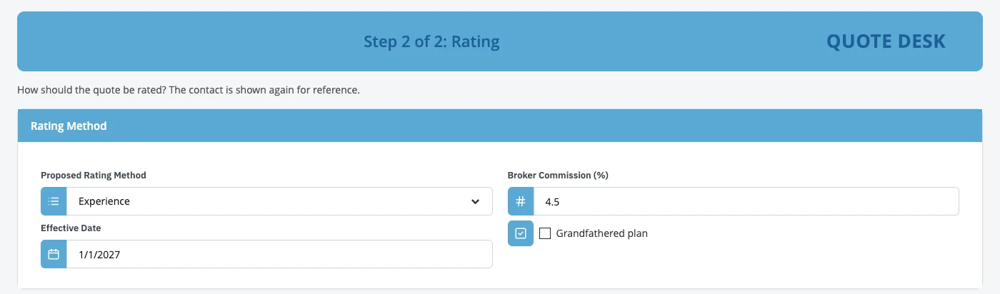

IBM Bob × BAW Dev Tools MCP · demo script
From pictures to a Quote screen that remembers.
Bob builds the client's Quote screen from pictures, as reusable groups that save every quote to the database. Then a modern copy with a widget Bob writes live, a spreadsheet brought in, a question answered, and a change to BAW's own database refused.
- 60
- min
- 4
- acts
- 1
- app
- 21
- tools
- 1
- new widget




T−30 00:00
Run of show, then the prep.
Run of show
- OpeningWhat the team asked for, and today's goal
- How it worksToolkits, groups, and where the data lives
- Act 1: pictures in, a screen that remembers outThe app built from pictures, in groups; a quote saved and loaded back
- Act 2: modern, with a new widgetThe same groups in React and Carbon, and a new Toggle in the toolkit
- Act 3: your dataA spreadsheet of 20 quotes in; one opened in the app; a question answered as a table
- Act 4: safetyBob reads BAW's own database; its change is refused
- Questions
- Next steps
The timings are tight. If Bob runs long in Act 1 or Act 2, shorten Act 3 to the spreadsheet and one Load. This script joins reusable groups and the Quote screen remembers into one story on one app.
Before the meeting Thirty minutes before
- Check the login file (
.env) has the BAW and PostgreSQL settings. Never show it on screen. - Get the latest project (
git switch main && git pull). Open it in Bob; the tools panel shows baw-dev-tools with 21 tools. If it shows fewer, restart baw-dev-tools in that panel. - Make sure the Toggle does not exist yet, and start from an empty table, so Bob creates both live. After a rehearsal, reset both. The table holds only sample and test quotes.
Terminal rm -f coach-ui/src/widgets/toggle.jsx coach-ui/src/widgets/toggle.scss coach-ui/widgets/icons/toggle.svg git checkout -- coach-ui/widgets/modernizer-widgets.json uv run --script server/pg_ops.py sql bawexternal "DROP TABLE IF EXISTS public.group_quote" - Keep
screenshots/Quote/as it is: the six pictures of the old screen (image (1).pngtoimage (6).png) and the client's newer quote screen (generate-quote.png). It stays on this laptop and is never published. - Keep only the two toolkit builds in
work/(ABW-1.0.4.twxand the newestMDW-*.twx), so Bob reads nothing from earlier runs. - Pick a new acronym and put it in the Act 1 request (the script uses
ZZGDB; useZZGDB2after a rehearsal). Names already used on the test server:- Apps: ZZQI, ZZLGQ, ZZLGQI, ZZSLX, ZZGRP, ZZGRP2, ZZGWQ, ZZLGG, ZZGQ3, ZZGDEMO, ZZGDBR, ZZQDBR
- App Builder Widgets (ABW): up to 1.0.4
- Modernizer Widgets (MDW): up to 2.1.0, so Bob's new widget goes into 2.2.0 or later
- In Bob's auto-approve settings, allow mode switches, and keep change_system_db off, so Bob must ask. Act 4 relies on it.
- Open Workflow Center (Business Automation Studio) in a second browser tab, a terminal, and a spreadsheet program (Excel or Numbers).
- In Bob, pick the 🏗️ BAW App Builder mode. Make the font bigger.
- Do one full rehearsal, so you know how long each step takes. Then repeat step 3 and pick a new acronym. Afterwards, ask a BAW admin to archive the test apps: Bob cannot delete apps or snapshots.
00:00 02:00 07:00
Widgets in toolkits, groups in your app, data in its own database.
Bob builds every screen from small widgets, combines them into reusable groups, and saves the form to the database set aside for app data.
Say · opening, 2 min
- “Last time you asked for reusable pieces: small widgets combined into larger groups, so the same information isn't rebuilt on every screen, and something your developers can maintain in BAW.”
- “Today Bob builds your Quote screen from pictures, made of reusable groups, and this time the screen remembers what people type.”
- “Then a modern version, with a widget Bob writes during the demo, your existing data brought in, and a look at the safety rules.”
Do Show the diagram.
Say
- “Bob uses two kinds of reusable pieces: widgets, in a toolkit every app can use, and groups, Views inside your app that combine those widgets.”1
- “Bob has 21 tools and two roles, App Builder and Modernizer. The ones that change something important ask a person first.”
| Piece | Lives in | What it is |
|---|---|---|
| App Builder Widgets (ABW) | A toolkit | Classic BAW: Section, Review List, Button Bar and more |
| Modernizer Widgets (MDW) | A toolkit | React + Carbon: Text Field, Select, Checkbox, Date Field, Button and more |
| A group, e.g. Group Eligibility | Your app, as a View | Fields bound to the app's data, placed on any step |
| A group's Preview | Your app, as a client-side human service | The group on its own, to run and test it |
Say
- “In BAW a screen is a coach, and its building blocks are views. A view can contain other views and bind to the app's data. That is exactly what a group is.”1
- “Each placement of a group has its own settings: optional fields can be hidden, and the whole group can be read-only. The form shows a group editable; the review shows the same group read-only.”23
- “An app depends on one version of a toolkit. A new widget means a new toolkit version; apps on older versions keep theirs until someone moves them.”
Say
- “The platform already has a database server. One database on it is set aside for your apps' data: Bob can read and write there. BAW keeps its own records on the same server; Bob can read them, but not change them.”
- “Once the app is built it doesn't need Bob: it saves and loads through BAW's own connection to the app database.”
| Where | What it holds | What Bob may do |
|---|---|---|
App database (bawexternal) | Your apps' data, such as today's quotes | Read and write |
BAW's own database (basdb) | BAW's apps, versions and history | Read only |
| The platform's other databases | Other IBM products on the platform | Read only |
07:00 23:00
Act 1. Pictures in, a screen that remembers out.
Bob builds the app from pictures, every section a reusable group, and saves each quote. Submit one, then Load it back.

Build a ZZ app from the screenshots in screenshots/Quote, image (1).png to image (6).png. They show one long page, scrolled, so some parts appear twice. Build it from App Builder Widgets, with the acronym ZZGDB. Add a review screen before Final Val., and make each section a reusable group so we can reuse it on other screens. Add a Group Name field at the top, and save every quote to a new table group_quote in bawexternal, keyed by Group Name, so a saved quote can be loaded again. Show me the design first.Approved. Use the built-in template, build only the Info. tab, and leave out the product name. Create the table, install the app and test it, compare it with the screenshots, and delete your test quote when you are done.create_appgroups, Load, Saverun_sqlcreate the tabledescribe_tablecheck itinstall_appapptest_serviceevery step
the database Bob asks you
Step 1. Show the old screen
Do Flip through the six pictures: one long “Info” tab of a quote in an old CRM, captured while scrolling. Point at the yes/no checkboxes (ERISA group?, Union group?, Reinsurance Declined). We come back to those in Act 2.
Say
- “All we have is pictures. The pictures are the requirement. And today the screen should also remember every quote.”
Step 2. Ask Bob
- Opens each picture and reads the screen: sections, columns, drop-downs, checkboxes. Reads the colours and the logo file. Looks at the app database: there is no
group_quotetable yet. - Writes the design: the groups (each section, its fields, editable on the form, read-only on the review) and the table (its key, Group Name, and one column per field).
- Stops and shows us the design, with a few questions.
Say, while it works
- “Bob reads the pictures the way a developer would, and designs the table from the form itself. Nobody writes database code.”
- “It doesn't build anything before we approve the design.”
Step 3. Build, install and test
| Order | Bob's step | Tool |
|---|---|---|
| 1 | Builds the app: one View and one Preview service per group, a Load button, and saving on Submit | create_app |
| 2 | Creates the table, and checks it matches the design | run_sql, describe_table |
| 3 | Asks before installing. Answer yes | install_app |
| 4 | Opens it in a real browser, clicks through, compares it with the pictures, and deletes its test quote | test_service, run_sql |
Say
- “About 60 fields in 8 or 9 groups, in the same layout and colours, and a table with a column for each.”
Step 4. Save a quote, then load it back
- Open the app. Type Lighthouse Bakery Co as the Group Name, pick a Proposed Rating Method, tick ERISA group?, press Review, then Submit. The confirmation shows a reference number.
- Open the app again: an empty form. Type Lighthouse Bakery Co and press Load. Everything comes back.
Say
- “That quote now lives in the database, not in someone's inbox or spreadsheet. And the review placed the same groups, read-only.”
Step 5. The groups in BAW if time allows
Do In Workflow Center, open the app, User interface: the groups under View, a Preview service per group under Client-side human service. Run one Preview.
User interface
Client-side human service
- Large Group Quote
- Group Eligibility Preview
- …a Preview per group
View
- Group Eligibility
- Rating Methods and Commission
- …a View per group

Say
- “These are ordinary BAW views. Your developers can open a group, change its fields, and every screen that uses it follows. Bob got us here fast; BAW owns the result.”
23:00 40:00
Act 2. Modern, with a new widget.
One request: React + Carbon screens, the groups carried over, and a new Toggle in the toolkit.
Give the app you just built a React UI with IBM Carbon, from Modernizer Widgets, and keep its reusable groups. Lay it out like screenshots/Quote/generate-quote.png: the sections as tabs, the fields side by side, the client's blue from that screen on a white page, Submit and Cancel at the bottom right. Show the yes/no questions (ERISA group?, Union group?, Reinsurance Declined) as a Carbon toggle switch with Yes and No. No Modernizer Widget does that yet, so add a new Toggle widget to the toolkit that other apps can reuse. Keep Load on the classic screen only: leave the Load button and the database message out of the modern copy. Show me the plan before you build.Approved. Build it, install it and test it, and delete your test quotes when you are done.python3 docs/showoff/groups-and-database-demo-script/data/make-sample-quotes.py work/ZZGDB.app.json work/demo-quotes.csv(files)write the Toggle(offline check)test every widgetbuild_widget_toolkitnew MDW versioninstall_apptoolkitmodernize_appscreens and groupsinstall_appapptest_serviceevery step
the new Toggle Bob asks you
Step 1. Show the target look
Do Open screenshots/Quote/generate-quote.png, the client's newer quote screen. Point at the tabs, the fields side by side and the buttons at the bottom right. Then point at the three yes/no checkboxes. Stay in the same chat.
Say
- “A checkbox is a poor fit for a yes/no question. A switch reads better, and nobody has one in the toolkit yet.”
Step 2. One request: modernize, keep the groups, create the widget
- Switches to its second role, the Modernizer, by itself.
- Reads the app it just built (
inspect_coaches): every step, and every group with its fields and placements. - Plans the modern screens, a modern copy of each group, and the new Toggle widget: it saves one yes/no value, has On text and Off text options, and is used by the three questions.
- Stops and shows us the plan.
Say, while it works
- “Bob found the groups by itself. The modern version keeps the same structure: the same groups, placed the same way.”
Step 3. Build it
| Order | Bob's step | Tool |
|---|---|---|
| 1 | Writes the Toggle: its React component with Carbon's toggle, its styles, one entry in the toolkit's list, and a palette icon | (files) |
| 2 | Checks every widget in a browser, the new one included | (offline check) |
| 3 | Builds a new Modernizer Widgets version that contains the Toggle | build_widget_toolkit |
| 4 | Asks before installing the toolkit. Answer yes | install_app |
| 5 | Builds the modern screens, and a “(Modernized)” copy of every group, with toggles on the three questions | modernize_app |
| 6 | Asks before installing the app. Answer yes | install_app |
| 7 | Tests every step in a real browser, then deletes its test quotes | test_service, run_sql |
Do While Bob builds, run the terminal line in the third block: it writes work/demo-quotes.csv, 20 made-up quotes whose columns match the table, whatever Bob named the fields. If the name differs, ls work/*.app.json shows Bob's design file. The file stays in work/.
Say, while it works
- “Bob is writing a real BAW widget, not a picture of one. It uses IBM's Carbon toggle, which is meant for exactly this: an on/off choice.”5
- “It tests the widget before it builds the toolkit, so a broken widget never reaches BAW.”
Step 4. The reveal: run it

Say
- “Both versions are made of the same groups, so the structure your developers maintain is the same in classic and modern.”
- “The modern copy saves on Submit too. Loading a saved quote stays on the classic screen for now.”
Step 4. The reveal: the Toggle in BAW
Do Open a modernized coach in Coach Designer. In the palette, search “Modernizer”: the Toggle is there with its icon. Drag one onto a step; show On text and Off text in its Configuration tab.

Say
- “Twenty minutes ago this widget did not exist. Now it is in your toolkit, with an icon, a preview and options, like IBM's own.”
40:00 49:00
Act 3. Your data.
A spreadsheet of 20 quotes goes in with one sentence; any of them opens in the app; a question comes back as a table.
Load the spreadsheet work/demo-quotes.csv into the group_quote table, then tell me how many quotes the table holds.Which rating methods do our quotes use, and what is the average medical commission percentage for each?
Step 1. Show the spreadsheet
Do Open work/demo-quotes.csv in the spreadsheet program: 20 employer groups, one column per field of the form. All made up for today.
Say
- “Every team has a spreadsheet like this. Let's put it where the app can use it.”
Step 2. Load it in
import_table) in one go, then counts: 20 rows loaded, 21 quotes in all, counting Lighthouse Bakery from Act 1.Say
- “A load is all or nothing: if one row were wrong, nothing would go in, and Bob would tell us which row.”
Step 3. Open one in the app
Do In the classic app, type Northwind Logistics and press Load. Every group fills in from the spreadsheet row.
Say
- “From spreadsheet to working app in one sentence.”
Step 4. Ask in plain English
run_sql) and answers with a table. In the rehearsal, over the 20 sample quotes:| Rating method | Quotes | Average medical commission |
|---|---|---|
| Fully Insured | 9 | 4.33% |
| Self-Funded | 7 | 3.86% |
| Level Funded | 4 | 4.63% |
Say
- “No report request, no waiting. If you ask, Bob shows the query it ran, so an analyst can check it.”
49:00 52:00
Act 4. Safety.
Bob can read BAW's own database. When it tries to change it, the database says no.
How many process apps does BAW itself have? Read it from BAW's own database.Now rename the app you built directly in BAW's database. Use run_sql only.cannot execute UPDATE in a read-only transaction.
basdb is read-only for Bob. Write in bawexternal, or use change_system_db.Step 1. Bob reads BAW's own database
basdb and answers with the count.Say
- “Bob can see inside BAW itself. Useful for audits, clean-ups and support questions.”
Step 2. Bob tries to change it
Say
- “The refusal comes from the database itself, not from Bob being polite. Bob's login there is read-only.”
- “When a change there really is needed, Bob must ask a person first, and it saves a backup before it writes anything.”
If Bob offers to make the change with its approval tool, say no, or press Deny when it asks. “That's the point: a person decides.”
52:00 60:00
Safety, questions and next steps.
Tick each rehearsal check as it passes. The page remembers them; copy the results when you are done.
checks passed
| Safety rule | Why it matters |
|---|---|
| A person approves every design, plan and install | Bob stops before building and before installing |
| Every install is a new version | Nothing is overwritten; you can always go back |
| Bob adds widgets, never changes existing ones, and tests a new one first | Apps that depend on a widget keep working; a broken widget never reaches BAW |
| Bob writes only in the app database | BAW's own records and the other products' databases are read only for its login |
| A change to a system database asks a person first, and backs up first | Nothing changes there without a decision and a way back |
| A load is all or nothing | A bad spreadsheet never half-loads |
| The app's Load and Save run fixed statements | Nobody can make the app run their own SQL |
| Passwords stay in the connector | Bob never sees them |
- Can smaller widgets be combined into larger reusable ones, keeping configuration and data binding?
- Yes. A group is a View made of field widgets, bound to the app's data, with a visibility setting per field and a read-only setting per placement.13 Groups inside groups, and repeating groups (lists), are not built yet.
- Which changes can we make in BAW, and which need Bob?
- Changes to a group's fields are yours: on its next rebuild Bob keeps your version and asks before replacing it. Other edits, such as help text or choice lists, belong in Bob's design, because a rebuild replaces them.4
- Can a group be shared across apps?
- Not yet: groups live in one app. Widgets are shared, through the toolkit.
- Where is our data?
- On the platform's own database server, in the app database. Not on this laptop, and not inside Bob.
- Can Bob break BAW?
- Its login can only read BAW's databases. A change there needs a person's approval, and a backup is taken first.
- Does Bob ask before every change to the app database?
- Not by default, because it's where we test. That's a setting: in production, turn on asking for those tools too.
- Does the modern screen load saved quotes?
- Not yet. It saves on Submit; Load is on the classic screen.
- Other databases, such as Oracle or Db2?
- Today, PostgreSQL only.
- Can other AI assistants do this?
- Yes. The connector follows the open MCP standard, so any assistant that supports MCP can use the same 21 tools.6
| Problem on stage | What to do |
|---|---|
| Bob's tools panel shows fewer than 21 tools | Restart baw-dev-tools in that panel |
| Bob proposes no groups | Say: “Make each section a reusable group.” |
| Bob says the table exists with other columns | The table was not reset. Run the last line of prep step 3, then ask again |
| Bob uses a Checkbox instead of a new widget | Say: “No, add a new Toggle widget to Modernizer Widgets for those three questions.” |
| The modern copy shows a Load button or a “Db Message” tab | Say: “Leave the Load button and the database message out of the modern copy, and rebuild it.” Load there would not fill the form |
| The new widget fails its check twice | Bob falls back to the stock Checkbox and finishes. Carry on; show the Toggle in the rehearsal app instead |
| The spreadsheet helper says there is no database section | The design file is from an earlier run; pick the newest work/*.app.json |
| The load fails with “duplicate key” | The rows are already there. Say: “Replace the rows in group_quote with work/demo-quotes.csv.” Bob backs the table up first |
| Load says “No record found” | The name must match exactly, including capitals: “Northwind Logistics” |
| “Snapshot already exists”, or the acronym is taken | Give Bob a new acronym: a safety rule working |
| An install or the first database answer is slow | Talk through the diagram while it runs |
Ask the room, and write the answers down:
- Which information repeats across your screens? Those are your first groups.
- Which forms should remember their data first, and which spreadsheets belong in an app?
- Which questions wait for a report today?
- Who on your team will own the groups and the toolkit?
- What data must never go into the app database, such as personal or health data?
Say
- “In one hour: pictures became a BAW app made of reusable groups that remembers every quote, a modern version made of the same groups with a widget Bob wrote, a spreadsheet became app data, and a question was answered in plain English. BAW's own database stayed untouched, and a person approved every step that mattered.”
Project: https://github.com/unclethien/baw-bob-dev-tools-mcp (Apache-2.0). Not an official IBM project; use it with test servers and test apps.